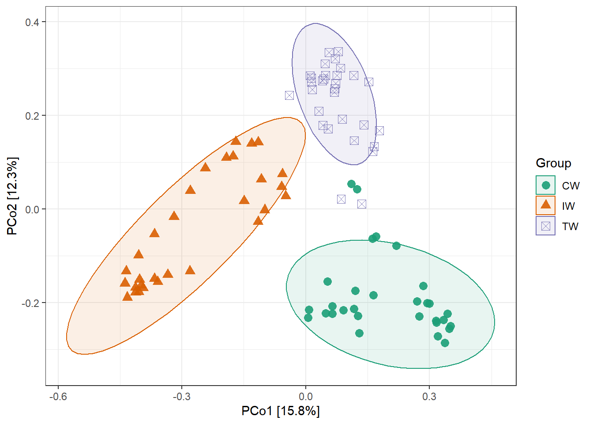
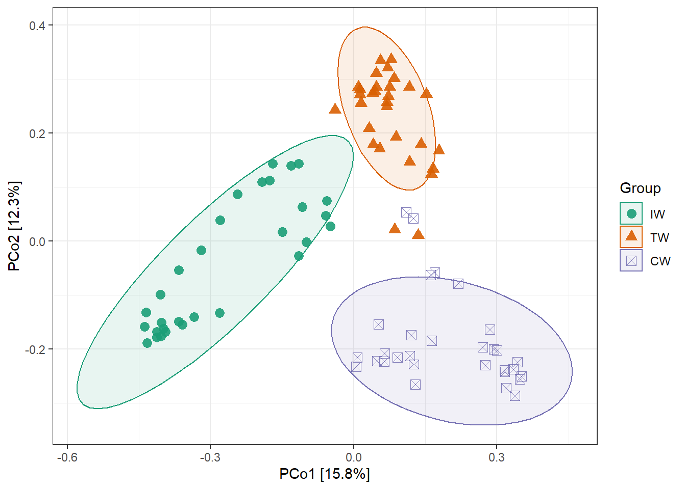

Chapter 9 Notes
We show some important things here.
9.1 clone
R6 class has a special copy mechanism which is different from S3 and S4. If you want to copy an object completely, you should use the function clone() instead of direct assignment.
# use clone to copy completely
t1 <- clone(dataset)
t2 <- clone(t1)
t2$sample_table <- NULL
identical(t2, t1)## [1] FALSE# this operation is usually unuseful, because changing t2 will also affect t1
t2 <- t1
t2$sample_table <- NULL
identical(t2, t1)## [1] TRUE9.2 subset of samples
We donnot provide the special function to filter samples in microtable class, as we think it is redundant. We recommend user to directly manipulate the sample_table in microtable object. For example, if we want to analyze samples from ‘CW’ and ‘IW,’ respectively, we can operate like this:
# remember first clone the full dataset
group1 <- clone(dataset)
group1$sample_table <- subset(group1$sample_table, Group == "CW")
# this is necessary to make files in group1 corresponding
group1$tidy_dataset()
group1## microtable class:
## sample_table have 30 rows and 4 columns
## otu_table have 9727 rows and 30 columns
## tax_table have 9727 rows and 7 columns
## phylo_tree have 9727 tips
## Taxa abundance: calculated for Kingdom,Phylum,Class,Order,Family,Genus,Species
## Alpha diversity: calculated for Observed,Chao1,se.chao1,ACE,se.ACE,Shannon,Simpson,InvSimpson,Fisher,Coverage
## Beta diversity: calculated for bray,jaccard# similar with obove operation
group2 <- clone(dataset)
group2$sample_table <- subset(group2$sample_table, Group == "IW")
group2$tidy_dataset()
# now we get two microtable objects: group1 for CW and group2 for IW9.3 change object
All the classes are set public, meaning that you can change, add or remove the objects stored in them as you want.
# add a matrix you think useful
dataset$my_matrix <- matrix(1, nrow = 4, ncol = 4)
# change the information
dataset$sample_table %<>% .[, -2]9.4 group order
If you want to reorder the groups, assign the factors may be the most simplest way.
data(dataset)
t1 <- trans_beta$new(dataset = dataset, group = "Group", measure = "bray")## Please also cite the original paper: An et al. (2019). Soil bacterial community structure in Chinese wetlands. Geoderma, 337, 290-299.t1$cal_ordination(ordination = "PCoA")## The ordination result is stored in object$res_ordination ...t1$plot_ordination(plot_color = "Group", plot_shape = "Group", plot_group_ellipse = TRUE)
Then we assign factors to the ‘Group’ in sample_table of dataset. We can find the changed group order in the legend and colors in the plot.
dataset$sample_table$Group %<>% factor(., levels = c("IW", "TW", "CW"))
str(dataset$sample_table)## 'data.frame': 90 obs. of 4 variables:
## $ SampleID: chr "S1" "S2" "S3" "S4" ...
## $ Group : Factor w/ 3 levels "IW","TW","CW": 1 1 1 1 1 1 1 1 1 1 ...
## $ Type : chr "NE" "NE" "NE" "NE" ...
## $ Saline : chr "Non-saline soil" "Non-saline soil" "Non-saline soil" "Non-saline soil" ...t1 <- trans_beta$new(dataset = dataset, group = "Group", measure = "bray")## Please also cite the original paper: An et al. (2019). Soil bacterial community structure in Chinese wetlands. Geoderma, 337, 290-299.t1$cal_ordination(ordination = "PCoA")## The ordination result is stored in object$res_ordination ...t1$plot_ordination(plot_color = "Group", plot_shape = "Group", plot_group_ellipse = TRUE)
9.5 add layers to plot
Most of the plots are generated by applying the ggplot2 package. The important parameters in the plotting functions are configured according to our experience. If the inner parameters can not enough, the user can add the layers to the plot like the following operation or make the plot using the data (generally data.frame class) stored in the object.
# The groupmean parameter can be used to obtain the group-mean barplot.
t1 <- trans_abund$new(dataset = dataset, taxrank = "Phylum", ntaxa = 10, groupmean = "Group")
g1 <- t1$plot_bar(others_color = "grey70", legend_text_italic = FALSE)
g1 + theme_classic() + theme(axis.title.y = element_text(size = 18))
9.6 save() function
As an R6 object is an encapsulated environment, there is also another very useful advantage, i.e. the data save and communication. By applying R6 classes, the analyzed data in ‘R Environment’ can have minimum numbers to reduce the intermediate files and structure and memory spending. It is also very convenient to save the analyzed data (i.e. object) to local computer with save() function for back-up and communication with others. This is also the recommended way to send data for testing in ‘Github Issues.’
# save 'dataset' to local computer
save(dataset, file = "dataset.RData")
# load the data by others in their R project
load("dataset.RData")